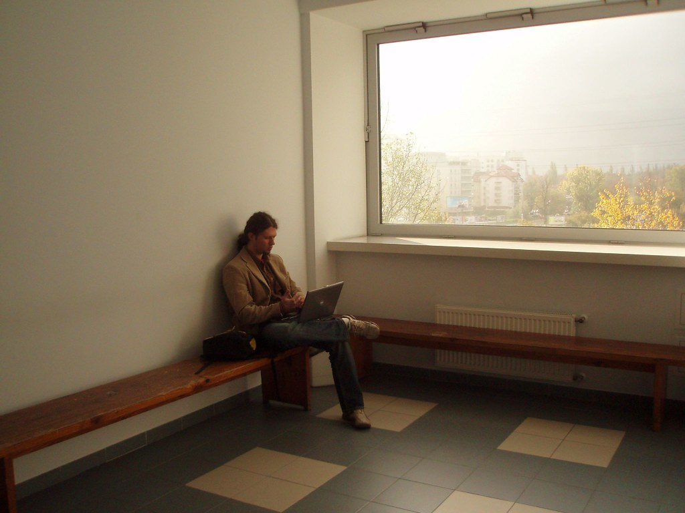

FURever
Let the dogs out, and the happiness in! ♥ - Get your walk on!

Who are we?
Furever is an app made with the problem of burned out lonely students in mind. The solution is a dog-walking app where you get (student)points for how far you walk the dog. This is further incentivized through the ability to use those points on discounts from different businesses in Oslo we are partnered with. You can also add your friends and compete to see who gets the most points! We feel the opportunity for students to be able to interact with animals while at the same time getting some exercise is an easy and excellent way to combat student loneliness and burnout.
It's important to note that this idea is made with students in mind but anyone can use it. It's not just students who get burned out or are lonely and can use animal companionship.
What we want to solve

Students in our day and age are pushing themselves further and further. They want the best grades possible so that they can get their dream jobs. However this can come at a price.
More and more students are getting burned out, lonely and depressed. Instead of spending all of their finite supply of money on expensive therapists, students deserve a cheap and easy way to relieve stress. We are well aware of the struggles of students and young people in general, when you google problems with studying in Norway one of the most cited problems is loneliness. Especially for exchange students, as Norwegians can be kind of closed in comparison to people from other countries. So this is definitely a very real problem that we feel need to be closely looked at. Some students can fall behind their classmates and without proper help to wind down and get some stress relieved off them they might not be able to do as well as they would want to in their day to day lives, study or in their work.
Our solution
So what can be done about this problem? Well combating depression and loneliness is a tricky thing that should not be trivialised as just exercise and you'll be fine or just be more social and you'll be fine. It is known that exercising does indeed help to make you feel better however. And we feel, through our own experience and through the feedback of friends and family, that combining exercise and some form of contact to another living thing is a very good alternative for people who have a hard time making friends or for people who are too burned out to be able to even try.
The solution is twofold

Here at Furever we want to combine both these true and tested ways of feeling better about both yourself and your situation. This giant hurdle of loneliness and being burned out can be overcome and we aim to help students on the way to a better student experience. Or helping young people just in their day to day lives.
We wanted this product to help as many disadvantaged people or animals as possible, so we decided to partner with an animal shelter in the center of Oslo. These animals have been abandoned and are also in need of social interaction. Our app is the first step on the way for people to be able to get their stressful daily lives a bit under control by taking a nice walk with an animal in sore need of love and affection.
Discounts!
On top of all of that you will also gain points in our app depending on how far you walk the dog and how often, you also get bonus multipliers if you keep a streak going. You can also compare your points to your friends to see how well they are doing. These points can be spent on discounts from our partners! 50% off on popcorn menus at the cinema, a free hotdog at your local shop, 30% off your next meal at your local restaurant. All of this is in addition to the warmth and love of an animal companion. We know young people can have problems with their personal economies so not only are their needs being taken care of but they can also save some of their well earned money here at Furever!
Where are we located?
We are located in the very center of Oslo, in very close proximity to many studenthubs. We feel this location is important due to the feedback we received while fleshing out this idea. Most people asked if they would use our service replied saying they would if the location was pretty central and it wasnt too much of a fuss getting to us. So with that in mind we chose the lovely cozy little spot you can see in the map above. Drop by at any time to meet our volunteers and to be able to spend some time with our lovely animals. ♥